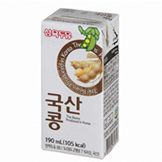

home>제품소개>일반두유
일반두유
- 국산 콩두유
190ml
- 국산 콩두유
- 유화제, 소포제, 안정제, 향 등 첨가물 NO!
기름류, 설탕, 액상과당 NO!
첨가물을 넣지 않고도 맛있는 진짜 착한두유!
- 삼육두유 순수한
190ml
- 삼육두유 순수한
- 현대인들의 영양 불균형 해소를 위해 오직 콩으로 만든 순수한 식물성 음료! 건강을 위해 천일염 외에는 아무것도 첨가하지 않은 설탕 0%의 제품입니다.
- 삼육두유 바나나
140ml
- 삼육두유 바나나
- 영양 많은 두유에 바나나과즙이 들어있어 더욱 맛있는 두유입니다.
- 삼육두유 쵸코
140ml
- 삼육두유 쵸코
- 코코아파우더로 초콜릿의 깊고 풍부한 맛을 살려 맛있게 드실 수 있습니다.
- 삼육두유 파우치
190ml
- 삼육두유 파우치
- 설탕을 넣지 않고 고소하고 부드러운 콩 그대로의 맛을 살린 파우치 레토르트 멸균제품으로, 한층 더 깊고 고소한 맛을 느끼실 수 있습니다
 달콤한 삼육두유B
달콤한 삼육두유B190ml
- 달콤한 삼육두유B
- 고소함+달콤함 고소한 두유의 달콤한 맛을 더한 필수 아미노산이 골고루 함유된 두유
 고소한 삼육두유A
고소한 삼육두유A190ml
- 고소한 삼육두유A
- 설탕을 넣지 않고 고소하고 부드러운 콩 그대로의 맛을 살린 절대 모방할 수 없는 맛
- 삼육두유 메론두유
140ml
- 삼육두유 메론두유
- 올 여름 무더위, 상큼한 메론두유와 함께 시원~하게 날리세요.~!